Cargando fecha y hora...
Directorio Links
Soporte Informática
CESFAM La Unión

Datos de Derivaciones
CESFAM La Unión
Búsqueda General
Tipo
Todos
Especialidad
Procedimiento
Patología
Vía
Todas
RAS
GES
HD (Hospital Digital)
Email
Papel
Telefónica
Destino
Todos
Estado GES (Atajo: g)
Todos
Solo GES
No GES
Limpiar (c)
Vista Tabla (t)
Exportar CSV
Resultados:
0
Total de registros:
0
Gráfico
Compacta
Tipo
Descripción
Vía
Destino
GES
Detalle
No se encontraron resultados
Intenta ajustar los filtros de búsqueda